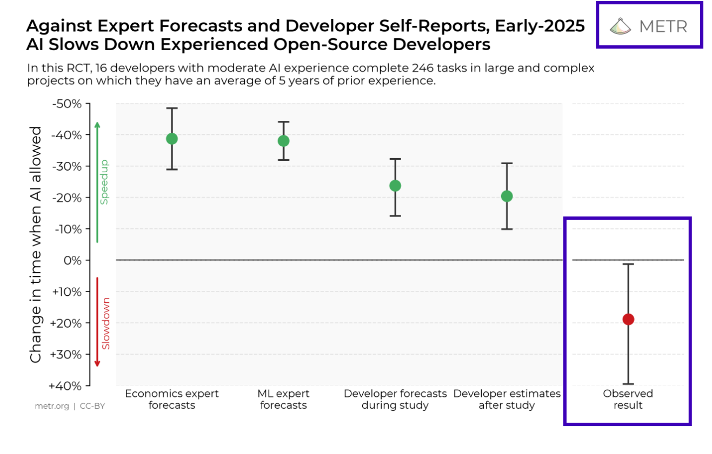
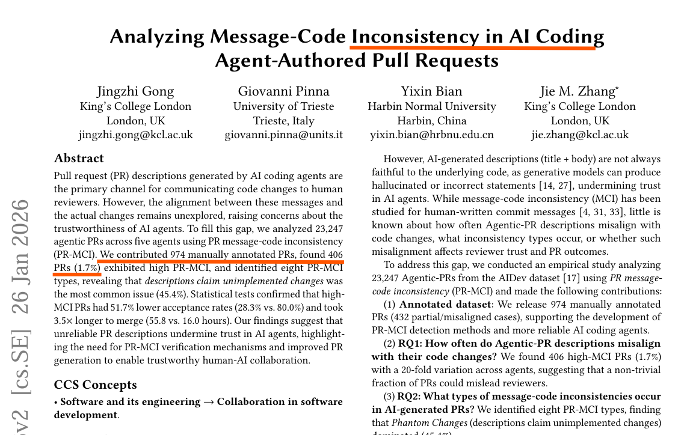
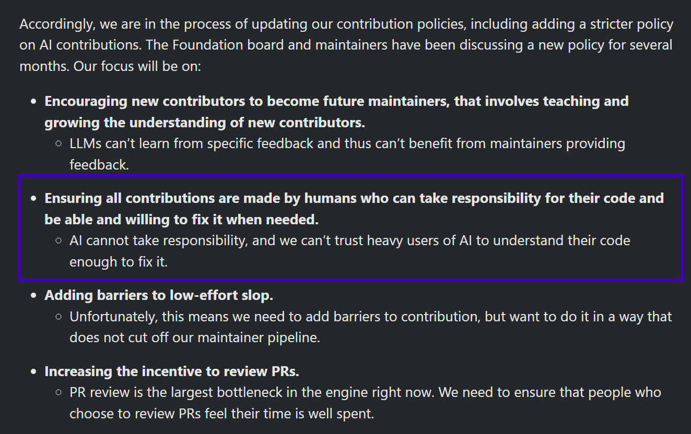

AI has to remain under human control and broadly benefit society.
As the stakes get higher, one should take all the time they need!
If not you will anyway lose permission to operate.
We will approach this with all the work we are doing to ensure
observability at every layer of stack and use to enforce
governance and containment.
Satya Nadella · Employee News & Events · 사내 공지
고객·문제 및 비즈니스 가치 20점 02 · 관측되지 않는 한 층
stack의 모든 층을 관측합니다. 한 층만 빼고.
✓코드가 빌드됩니다CI
✓테스트가 통과합니다CI
✓규칙과 스타일을 지킵니다lint
✓취약점이 없습니다scanner
✓누가 승인했는지 남습니다review
✓누가 merge했는지 남습니다audit log
?그 사람이 이 변경을 이해했는지기록 없음
승인 버튼은 눌립니다. 누가 눌렀는지도 남습니다. 이해했는지는 어디에도 남지 않습니다. governance가 강제되려면 이 층에도 기록이 있어야 합니다.
근거 — 측정된 사실 20점 03 · 우리 감은 틀렸습니다
우리는 이 층을 감으로 판단해 왔습니다. 그 감은 틀렸습니다

전문가도, 개발자 본인도 빨라진다고 예측했습니다. 실험이 끝난 뒤에도 20% 빨라졌다고 믿었습니다.
실제로는 19% 느렸습니다. 자기 보고는 근거가 되지 못합니다.
근거 — 측정된 사실 20점 04 · 공백은 이미 이름이 붙어 있습니다
AI가 쓴 PR 설명은 코드와 어긋납니다. 이미 측정되었습니다

45.4%가장 흔한 유형은 구현되지 않은 변경을 설명이 주장하는 것
28.3%불일치가 큰 PR의 승인율 (정상 PR은 80.0%)
3.5×merge까지 걸린 시간 55.8시간 vs 16.0시간
unreliable PR descriptions undermine trust in AI agents, highlighting the need for
PR-MCI verification mechanisms
Gong, Pinna, Bian, Zhang · Analyzing Message-Code Inconsistency in AI Coding
Agent-Authored Pull Requests · arXiv, 2026-01-26 · agentic PR 23,247건 분석
논문이 필요하다고 지목한 그 verification mechanism을 만들었습니다.
AI 시대의 새로운 시도 15점 05 · 금지가 아니라 확인
업계의 답은 금지였습니다. 우리의 답은 확인입니다
Godot Engine · 기여 정책 2026
AI cannot take responsibility
사람이 책임질 수 있는 기여만 받겠다는 결정입니다. 이해하지 못한 기여는 받지 않습니다.
금지는 명확합니다. 다만 AI의 생산성까지 함께 버립니다.
The Last Human
누가 썼는지가 아니라, 이해했는지를 봅니다
AI 탐지에 의존하지 않습니다. 변경의 위험도로만 판단하고, 위험한 변경에 한해 작성자에게 코드에 근거한 설명을 요구합니다.
금지도, 전수 검사도 아닙니다

사람–AI 역할 설계 15점구현 완성도 및 시연 30점 → 다음 88초 06 · 어떻게 동작합니까
방향을 뒤집었습니다 — 사람이 모델에게 답합니다
다른 AI 리뷰 도구는 사람에게 설명을 전달합니다. The Last Human은 사람에게 설명을 요구합니다.
Step 1
위험도 판정
중요 경로·변경량·위험 패턴을 순수 함수로 계산합니다. 같은 입력이면 항상 같은 결과입니다.
모델을 부르지 않습니다
Step 2
질문 생성
그 hunk와 그 코드가 호출하는 다른 파일을 근거로 질문을 만듭니다. 오답도 저장소에 실재하는 것으로 채웁니다.
설명문만 읽고는 답할 수 없습니다
Step 3
설명과 근거
보기를 고르는 데 그치지 않고 코드 어디가 근거인지 한 줄로 받습니다.
Accepted / Hold
Step 4
commit 결속
확인 기록을 head SHA에 묶습니다. 새 commit이 오면 무효가 되고 다시 묻습니다.
사람에게 자격을 주지 않습니다
만들지 않습니다
개인 점수·순위
리더보드도, 팀장 조회 기능도 만들지 않습니다. 집계는 모듈 단위뿐입니다.
만들지 않습니다
전수 적용
임계값 미달 PR은 Not required로 그냥 지나갑니다. 오타 수정에 확인을 요구하지 않습니다.
만들지 않습니다
감점 기록
Hold는 남기지 않고 통과한 것만 쌓습니다. "모르겠다"는 정직한 답변입니다.
DEMO · 88s
구현 완성도 및 시연 · 30점
1 token refresh PR — 초록 체크는 전부 통과, gate만 대기 ·
2 두 문항 제시 ·
3 첫째 Accepted ·
4 둘째 Hold — "한 곳 더 보십시오" ·
5 옆 파일 http_client.py에 이미 있던 retry loop 발견 — 3 × 3 = 9 ·
6 GitHub 8·17 장애 사후분석: 같은 종류의 loop ·
7 수정 → 새 commit이라 gate가 다시 질문 ·
8Human-verified → 사람이 merge ·
9 저위험 문서 PR은 그대로 통과 ·
10 dashboard Can answer 0 → 1
Demo_thelasthuman.mp4 를 이 폴더에 두면 자동 재생됩니다
체계적 구체화 과정 15점 07 · 가설 · 실험 · 측정 · 학습
이 gate를 우리 PR에 먼저 걸었고, 우리가 멈췄습니다
0gate가 발동한 PR
0설명 대기로 멈춘 PR
0통과 기록이 남은 PR
0멈췄다가 통과한 PR
가설 → 실험
판단이 들어간 파일일수록 멈춘다
risk.py · interview.py · attest.py → 각 +30
그 셋을 고칠 때마다 우리 PR이 설명을 요구받았습니다
측정 → 학습 ①
못 잡는 것을 찾았습니다
인증 경로 삭제형 변경은 30 / 40으로 발동하지 않습니다
중요 경로 최고 가중치가 임계값보다 낮고, 위험 패턴은 추가된 줄에만 걸립니다
A 가중치 상향 · B 삭제 신호 · C 무조건 발동 경로 ← 선택
측정 → 학습 ②
숨기지 않습니다
대기 상태로 merge된 PR이 12건 있습니다
개발 기간이라 required check를 계속 걸어 두지 않았기 때문입니다
이 수치도 그대로 보고합니다
commit 109 · PR 36 · test 519 · workflow 4 | 개발 저장소 hunhoon21/the-last-human → 2026-09-15 microsoft-2026-hackathon으로 이관 · 당시 status context는 comprehension-gate
배포·확장성·보안 20점 08 · Architecture — PR 하나가 지나가는 길
gate를 여는 주체는 서버 하나, 검증하는 주체는 Actions입니다
왜 믿을 수 있습니까
서버가 "통과"라고 말해도 gate는 열리지 않습니다. Actions가 대상 PR을 다시 읽어 위험도와 snapshot을 재계산하고 receipt와 대조한 뒤에야 열립니다.
비밀은 어디에 있습니까
App private key · client secret · 모델 자격은 서버에만 둡니다. 경계를 넘는 것은 단기 OIDC 신원과 metadata뿐입니다.
모델의 권한은 무엇입니까
질문을 쓰고 근거 한 줄을 대조할 뿐입니다. GitHub 상태를 바꾸거나 merge를 승인하지 못합니다. 위험 점수는 모델을 부르지 않습니다.
배포·확장성·보안·Global 20점 09 · 어떻게 배포하고 확장합니까
Microsoft stack 위에서 장기 시크릿 없이 동작합니다
GitHub App
저장소 한정 권한
선택한 저장소에만 유효한 installation token으로 API를 호출합니다.
Actions · OIDC
단기 신원
사전 공유한 장기 시크릿 대신 저장소에 묶인 OIDC 토큰을 씁니다.
Azure OpenAI · Entra ID
키 없는 호출
API key 없이 Entra 토큰으로 호출합니다. AzureCliCredential
결과
장기 시크릿 0개
경계를 넘는 것은 단기 자격과 metadata뿐입니다.
도입
세 갈래 · 파일 3개
A 운영자(한 번) App 등록 → 서버 배포 → healthz 확인
B 저장소마다 App 설치 → 파일 3개 PR → 변수 → 그다음에 required check
C 작성자(PR마다) 로그인 → 두 문항 → merge
사내망
webhook이 아니라 relay
GitHub webhook 수신자가 아니므로 서버를 사내망에 둘 수 있습니다
self-hosted runner와 사내 접속 경로가 필요합니다
대가는 runner 기동 지연 20–40초입니다
Global · 현재 제약
지역 종속이 없습니다
GitHub PR 흐름 위에서만 동작하고, 정책은 .lasthuman.yml 한 파일입니다
모델은 조직이 고른 Azure 리전을 씁니다
제약: 서버 1대 = 저장소 1개 · 구조 분석은 Python 중심
고객·문제 및 비즈니스 가치 20점 10 · 마무리
AI는 책임질 수 없습니다. 사람은 질 수 있습니다. 그러려면 이해가 기록되어야 합니다.
If not you will anyway lose permission to operate.
Satya Nadella — 첫 장에서 인용한 그 문장입니다
권한을 지키는 방법은 속도를 줄이는 것이 아닙니다.
stack의 마지막 한 층에 기록을 남기는 것입니다. The Last Human이 그 한 층입니다.